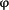

- Journal List >
- NIHPA Author Manuscripts >
- PMC2700002
Abnormal motor phenotype in the SMNΔ7 mouse model of spinal muscular atrophy
Abstract
Spinal muscular atrophy (SMA) is recessive motor neuron disease that affects motor neurons in the anterior horn of the spinal cord. SMA results from the reduction of SMN (survival motor neuron) protein. Even though SMN is ubiquitously expressed, motor neurons are more sensitive to the reduction in SMN than other cell types. We have previously generated mouse models of SMA with varying degrees of clinical severity. So as to more clearly understand the pathogenesis of motor neuron degeneration in SMA, we have characterized the phenotype of the SMNΔ7 SMA mouse which normally lives for 13.6 ± 0.7 days. These mice are smaller than their non-SMA littermates and begin to lose body mass at 10.4 ± 0.4 days. SMNΔ7 SMA mice exhibit impaired responses to surface righting, negative geotaxis and cliff aversion but not to tactile stimulation. Spontaneous motor activity and grip strength are also significantly impaired in SMNΔ7 SMA mice. In summary, we have demonstrated an impairment of neonatal motor responses in SMNΔ7 SMA mice. This phenotype characterization could be used to assess the effectiveness of potential therapies for SMA.
INTRODUCTION
Proximal spinal muscular atrophy (SMA) is an autosomal recessive degenerative disease characterized by selective loss of α motor neurons of the anterior horn of the spinal cord (Crawford and Pardo, 1996). The loss of motor neurons results in atrophy of limb and trunk muscles. SMA has a different spectrum of clinical signs which can be roughly divided into three groups based on age of onset and clinical severity (Crawford and Pardo, 1996). SMA results from the loss or mutation of the SMN1 (survival motor neuron 1) gene but retention of SMN2 (Lefebvre et al., 1995). SMN is ubiquitously expressed and its expression is depressed in all SMA tissues including motor neurons (Coovert et al., 1997; Lefebvre et al., 1997). In humans, the SMN gene is duplicated to yield two SMN genes (SMN1 and SMN2). SMN1 and SMN2 differ by a single nucleotide (C→T) within an exon splice enhancer of exon 7 (Lorson et al., 1999; Monani et al., 1999). Transcripts derived from SMN1 contain exon 7 while most of the transcripts from SMN2 lack exon 7. The severity of the SMA phenotype depends on the copy number of SMN2 and the levels of SMN protein (Coovert et al., 1997; McAndrew et al., 1997; Lefebvre et al., 1997).
SMN is required for the assembly of small nuclear ribonucleoproteins (snRNPs) which are essential for splicing of premessenger RNA transcripts (Liu and Dreyfuss, 1996). snRNP biogenesis is defective in cell lines from SMA patients (Pellizzoni et al., 1999; Wan et al., 2005); Shpargel and Matera (Shpargel and Matera, 2005), however, demonstrated that some SMN mutants found in severe SMA patients have normal snRNP biogenesis. Furthermore, a recent study using a zebrafish model for Smn knockdown show that there is a novel function in motor neuron axons that is independent of snRNP biogenesis (Carrel et al., 2006). The mechanism which accounts for the motor neuron specificity of SMA is presently unclear.
Unlike humans, mice carry only one SMN gene (mSmn) which is equivalent to SMN1 (DiDonato et al., 1997; Viollet et al., 1997). Loss of mSmn results in embryonic lethality in the mouse suggesting that the mSmn gene product is essential for cell function and survival (Schrank et al., 1997). Conditional knockdown of mSmn in various cell types including neurons, differentiated myocytes and hepatocytes also leads to death of those cells (Cifuentes-Diaz et al., 2002; Nicole et al., 2003; Vitte et al., 2004). Furthermore, reduction of SMN protein levels in zebrafish results in abnormalities in motor neuron-specific axon pathfinding (McWhorter et al., 2003). In developing motor neurons with low SMN levels, axons are truncated and branch excessively. Insertion of SMN2 into mSmn null mice by transgenesis rescues the embryonic lethality phenotype (Monani et al., 2000). Mice with low copy numbers (i.e. 1–2) of SMN2 develop severe (type I-like) SMA and die at 6–8 days (Monani et al., 2000; Hsieh-Li et al., 2000) while those mice with higher copy numbers (i.e. 8) of SMN2 are phenotypically normal when compared to nontransgenic littermates (Monani et al., 2000) demonstrating that the SMN2 gene product can correct the SMA phenotype. Introducing SMN lacking exon 7 (SMNΔ7) into SMN2;mSmn−/− mice partially ameliorates the SMA phenotype and these mice die at 14–15 days (Le et al., 2005). The SMNΔ7;SMN2;mSmn−/− mice show that SMNΔ7 is functional but it does not produce enough functional SMN protein to completely rescue SMA-like motor neuron degeneration. Introduction of a missense mutation (SMN(A2G)) found in type III SMA patients (Parsons et al., 1998) into SMN2;mSmn−/− mice modulates the SMA phenotype such that the transgenic mice can survive for over 1 year (type III-like SMA) (Monani et al., 2003). SMN(A2G) alone is not sufficient to rescue the embryonic lethality observed in mSmn null mice.
There are now mouse models of SMA with varying degrees of phenotypic severity (reviewed in Butchbach and Burghes, 2004). These models are currently being used to test various therapies for the amelioration of the SMA phenotype. In order to properly assess the therapeutic effect of a given agent, a thorough understanding of the motor degenerative phenotype is needed. In this study, we characterize the motor phenotype of SMNΔ7 SMA mice. Motor behaviors such as surface righting reflex, negative geotaxis, spontaneous motor activity and grip strength are severely affected in SMNΔ7 SMA mice. Additionally, we show two applications of motor behavior analysis: identification of SMA mice and design of therapeutic screening experiments by determining the number of mice that would be required to observe a certain beneficial effect on a phenotype.
MATERIALS AND METHODS
Animals
Intermediate SMA mice were generated from males and females of the genotype SMN2+/+;SmnΔ7+/+;mSmn+/− (line 4299; FVB.Cg-Tg(SMN2*delta7)4299Ahmb Tg(SMN2)89Ahmb Smn1tm1Msd). These mice originated from our colony but can be obtained from Jackson (#005025). Mice were maintained on a 12 h:12 h light:dark cycle (light period 06:00 until 18:00) with ad libitum access to food and water. All breeding dams were provided with nesting material before parturitation and delivered their pups spontaneously. The date of birth was designated as postnatal day (PND) 01. Each pup in the litter was marked with an identification code at PND01. All experiments were conducted in accordance with the protocols described in the National Institutes of Health Guide for the Care and Use of Animals and were approved by the Ohio State University Institutional Laboratory Animal Care and Use Committee.
Genotyping
Neonatal offspring were genotyped using a PCR-based assay on genomic DNA from tail biopsies—obtained after death—as described previously (Le et al., 2005; Butchbach et al., 2007). To determine the presence of mSmn knockout allele, the following PCR primers were used: NeoB, 5′-gcagctgtgctcgacgttgtc-3′ and SmnInt2R, 5′-taagaaagcctcgacgttgtc-3′ (PCR conditions: 95°C for 4 min, 35 cycles of 95°C for 1 min, 63°C for 1.5 min and 72°C for 1 min followed by a final extension at 72°C for 4 min). PCR primers designed to detect an intact mSmn allele were used to distinguish SMA pups from carrier pups: mSmnEx2AF, 5′-ttttctccctcttcagagtgat-3′ and mSmnEx2BR, 5′-ctgtttcaagggagttgtggc-3′ (PCR conditions: 95°C for 4 min, 32 cycles of 95°C for 1 min, 57°C for 1 min and 72°C for 1 min followed by a final extension at 72°C for 4 min). Intermediate SMA mice (SMN2+/+;SmnΔ7+/+;mSmn−/−) would be positive for the mSmn knockout PCR reaction and negative for the intact mSmn PCR reaction while carrier mice (SMN2+/+;SmnΔ7+/+;mSmn+/−) would be positive for both the mSmn knockout and intact mSmn PCR reactions. Normal mice (SMN2+/+;SmnΔ7+/+;mSmn+/+) would test negative for the mSmn knockout PCR but positive for the intact mSmn PCR reaction. The sex of the pups was determined by PCR for the male-specific Sry gene. The following PCR primers were used (McClive and Sinclair, 2001): SryF, 5′-tcatgagactgccaaccacag-3′ and SryR, 5′-catgaccaccaccaccaccaa-3′ (PCR conditions: 94°C for 5 min, 30 cycles of 94°C for 1 min, 67°C for 1 min and 72°C for 1 min followed by a final extension at 72°C for 10 min).
Behavior Analysis
Unless otherwise stated, each mouse pup was analyzed daily for body mass as well as changes in behavior until the last SMA pup in that litter has died. Pups were also inspected daily for the following developmental landmarks: incisor eruption, hair growth and eyelid opening. The tester was blinded to the genotype of each mouse pup. All tests were conducted during the light period between 14:00 and 17:00. The behavior tests used were based on modifications to the Fox battery (Fox, 1965) which uses reflex-based assays to monitor the maturation of the motor and sensory components of the nervous system (Le Roy et al., 2001; Dierssen et al., 2002). Motor activity was captured using a Canon digital video camcorder (NTSC ZR60) and analyzed after motor behavior was recorded. The observer was blinded to the genotype of each mouse.
Righting Reflex
Each pup was turned onto its back and the time it takes to stably place all four paws on the ground was recorded (cutoff time of 60 s). Righting reflex latency was recorded daily starting at PND02 until PND08 or a latency less than 60 s was observed for 2 consecutive days, whichever occurred first.
Clasping Response
Each pup was held by the scruff of its neck and footpads of the forelimbs and hindlimbs were gently stroked with a toothpick. The presence or absence of a clasping response was recorded. Clasping responses were measured from PND02 until PND08.
Negative Geotaxis
Each pup was placed on a 45° incline with its head pointing down the incline. The latency for turning 180° (i.e. with its head pointing up the incline) was recorded (cutoff time of 180 s). If a pup could not maintain a righted position during the assay, then a maximum latency was recorded. Negative geotaxis responses were measured from PND04 until PND08.
Cliff Aversion
Each pup was placed on the edge of a cliff with its head and forepaws hanging over the edge to determine if the pup would have turned and crawled to safety. Cliff aversion was analyzed between PND06 and PND08.
Visual Placing Response
On the day after eyelid opening, each pup was suspended by its tail and lowered towards the tip of a pencil. The pencil tip did not touch the vibrissae of the pup. If the pup extended its forepaws toward the tip, then a positive response was recorded.
Spontaneous Locomotor Activity
Each pup was placed in the center of an arena where the floor has been divided into 28 2.5-cm2 grids (7×4). The floor of the arena was covered with home bedding. Each pup was videotaped for 60 sec and the number of grids crossed during this time was counted as well as the latency for walking a distance greater than its body length. The number of times each mouse slipped from its righted position was also recorded. Spontaneous locomotor activity measures were collected using Stopwatch+ (Center for Behavioral Neuroscience, Atlanta, GA) and were monitored on PND04, PND07, PND11 and PND14.
Pivoting
Each pup was placed in the center of an arena where the floor has been divided into 28 2.5-cm2 grids (7×4). The floor of the arena was covered with home bedding. Each pup was videotaped for 60 sec and the number of times the pup turned 90°C (pivots) was counted during this time. Pivoting was recorded using Stopwatch+ and was monitored on PND04, PND07, PND11 and PND14. To minimize the stress on the pup, the spontaneous locomotor activity and pivoting tests was conducted simultaneously.
Homing Test
Each pup was separated from its dam for at least 20 min and then transferred to an arena with the floor divided into 28 2.5-cm2 grids (7×4). Beddings from the home cage was evenly spread across one side of the arena (1×4) and the pup was placed on the opposite side. The time required to place both forepaws within the home scent area was recorded (cut off time of 180 s) along with the number of grids entered during the test period. The measures assayed during the homing test were recorded with Stopwatch+. The homing test was performed on PND11 and PND14.
Hindlimb Splay
Each pup was suspended by its tail for 5 sec and observed for splaying of hindlimbs. Hindlimb splay was examined on PND11 and PND14.
Grasping Response
Each pup was placed on a 1-cm2 wire mesh and gently dragged horizontally along the mesh. Any resistance felt by the observed was scored as a positive response. Grasping response was monitored on PND11 and PND14.
Grip Strength
Grip strength was assessed using a suspension test. Each pup was placed on a wire mesh (1 cm2 grids) and the mesh with the mouse was inverted. The latency for the pup to release the mesh was recorded. Grip strength was measured on PND11 and PND14.
Statistical Analysis
Parametric data are expressed as means ± standard error and were analyzed using one-way ANOVA with a Bonferonni post hoc test. In most cases, repeated measures data were subjected to a general linear model (GLM) analysis with sex and/or genotype as the between-subject factors and age (PNDs) as the within-subjects factors. For GLM analysis, the data was first analyzed using Mauchly’s test of sphericity followed by ANOVA. Nonparametric data are expressed as a percentage of each genotype which has that score. All nonparametric data was analyzed in three pairwise combinations (SMA vs. carrier, SMA vs. normal and carrier vs. normal) using the Mann-Whitney U test. For identification of SMA mice by phenotype (i.e. absence of righting reflex or negative geotaxis responses, 2×2 contingency tables were generated and analyzed by Pearson χ2 with the strength of association being determined by . Kaplan-Meier analysis was performed on lifespan and onset of body mass loss data using the Mantel-Cox log rank post hoc test. Additionally, onsets of eyelid opening and visual placing response underwent Kaplan-Meier analyses using eyelid opening and visual placing response as the survival functions. All statistical analyses were performed with SPSS v. 14.0.
Using power analysis, we calculated the number of subjects needed to detect a 10%, 20%, 50% or 100% change in each of the behavioral data collected. In all cases, α=0.05 and power (1−β)=0.80. For parametric data, the sample size was calculated using the following equation: n = 1 + 2C(s/d)2 (equation 2 in Dell et al., 2002; s=standard deviation, d=difference and C=7.85 for α=0.05 and 1−β=0.80). For survival and onset of body mass loss data, the following equation was used for calculating sample size: n = (2s2C2)/d2 (equation 2 in Wittes, 2002).
RESULTS
Survival, growth curves and general appearance
Newborn pups (n=82) from 10 litters of SMNΔ7 carrier (SMN2+/+;SmnΔ7+/+;mSmn+/−) matings were analyzed for survival as well as changes in motor behavior. Of these pups, 24 had SMA (SMN2+/+;SmnΔ7+/+;mSmn−/−), 35 were carriers and 23 were normal (SMN2+/+;SmnΔ7+/+;mSmn+/+). Within this testing group, the average lifespan of SMNΔ7 SMA mice was 13.6 ± 0.7 days, which is in close agreement with previous results (Le et al., 2005). Male SMNΔ7 SMA mice tended to live longer on average than their female littermates (15.0 ± 0.6 days versus 12.5 ± 1.2 days), however, this trend was not statistically significant (Figure 1; χ2=0.834, p=0.36). There is no correlation between the mass of SMNΔ7 SMA mice at birth and their lifespans (Pearson R = 0.054). The size of the litter has no correlation with lifespans of SMNΔ7 SMA mice (Pearson R = −0.026). Additionally, maternal age has no effect on the survival of SMNΔ7 SMA mice (Pearson R = 0.176).

Figure 1
During the early stages of the disease—i.e. PND02-PND07, SMNΔ7 SMA mice are not significantly different in appearance aside from their smaller size when compared to their carrier and normal (i.e., non-SMA) littermates (Figures 2A–2B). In fact, the appearance of body fur and the eruption of incisors occur in SMNΔ7 SMA mice at the same times as for non-SMA mice. SMNΔ7 SMA mice are smaller and appear emaciated at PND11 and PND14 (Figures 2C–2D) presumably due to neurogenic muscle atrophy. Postnatal growth curves were analyzed for SMNΔ7 SMA, carrier and normal mice of both sexes. Both male and female carriers as well as normal pups have a continuous growth curve (Figure 3A–B). The growth curves for both male and female SMNΔ7 SMA mice are different from their non-SMA littermates (testing day F13,858 = 1263, p < 0.001; testing day×genotype F65,858 = 43.2, p = 0.002). For male pups (Figure 3A), the mean body masses between SMNΔ7 SMA and normal mice are significant different beginning at PND03; however, the differences in mean body mass between SMNΔ7 SMA and carrier mice are significant starting at PND05. There is a significant difference in body mass between female SMNΔ7 SMA mice and their normal littermates beginning at PND02 while body masses of female SMNΔ7 SMA mice are significantly different from carrier mice starting at PND03 (Figure 3B). Male and female SMNΔ7 SMA mice continue to gain body mass until PND09-PND11 where after they start losing body mass. The mean onset of body mass loss (Figure 3C) occurs later in male SMNΔ7 SMA mice (11.1 ± 0.3 days) than in female SMNΔ7 SMA mice (9.8 ± 0.7 days after birth) but, as with survival, this difference is not significant (χ2 = 0.252, p=0.62).

Figure 2
Onset of Reflexological Responses
Neonatal mice will normally reposition themselves to a prone position within 5 seconds after being placed on their backs (righting reflex response). The righting reflex response can be seen in pups as early as PND02. However, only 10–30% of SMNΔ7 SMA are able to exhibit a righting reflex response at any given age (Figure 4A; Mann-Whitney U = 170.5, p < 0.001 when comparing SMA to carrier mice at PND02; U = 87.5, p < 0.001 at PND03; U = 61.5, p < 0.001 at PND04; U = 45.0, p < 0.001 at PND05; U = 43.0, p < 0.001 at PND06; U = 32.0, p < 0.001 at PND07; U = 64.0, p < 0.001 at PND08). Of the 24 SMA mice tested, only 7 were able to right themselves for two consecutive days whereas all of the carrier and normal mice were able to consecutively right themselves. Likewise, the amount of time required for a mouse to reposition itself from a supine position (righting reflex latency) is about 2.5–5-fold greater for SMNΔ7 SMA mice than for their non-SMA littermates (Figure 4B; testing day F6,444 = 1.193, p < 0.001; testing day × genotype F6,444 = 3.605, p = 0.002). The sex of the mouse had no effect on the righting reflex response nor on its latency.
As shown in Figure 4C, only 15–30% of SMNΔ7 SMA mice were able to elicit a proper response to negative geotaxis (Mann-Whitney U = 212, p < 0.001 when comparing SMA to carrier mice at PND04; U = 124, p < 0.001 at PND05; U = 84, p < 0.001 at PND06; U = 100., p < 0.001 at PND07; U = 92, p < 0.001 at PND08); most non-SMA mice, on the other hand, demonstrate a negative geotaxis response as early as PND04. There is no difference in the proportion of carrier and normal mice who exhibited a negative geotaxis response (e.g., Mann-Whitney U = 321.5, p = 0.313 at PND04). The latency to a negative geotaxis response is significantly longer for SMNΔ7 SMA mice (Figure 4D; testing day F4,296 = 2.47, p = 0.045; testing day × genotype F4,296 = 1.50, p = 0.203) than for non-SMA mice.
When placed over a ledge, neonatal mice will normally turn and move away from ledge (cliff aversion). Fewer SMNΔ7 SMA mice were able to successfully demonstrate a cliff aversion response (Figure 4E) than non-SMA mice at PND06 (17.4%; Mann-Whitney U = 179.0, p < 0.001 when comparing SMA to carrier mice), PND07 (28.6%; U = 169.5, p < 0.001) and PND08 (33.3%; U = 112.0, p < 0.001).
Onset of Sensory Responses
The onset of tactile sensory functions was assessed in SMNΔ7 SMA mice using the clasping response which is characterized by clasping of either the forepaw or hindpaw following gentle stimulation with a probe. Clasping responses were elicited in neonates at PND02 until PND08. At all ages tested, every mouse irrespective of genotype elicited a clasping reaction in response to tactile stimulation of either the forelimb or the hindlimb (data not shown).
The visual placing response was used to assess visual sensory function in SMNΔ7 SMA mice. For visual placing, a mouse is suspended by its tail and observed for the grasping of an object placed within their field of vision. In order for this response to occur, the eyelids must first be able to open. All of the SMNΔ7 carrier and normal mice were able to open their eyelids. Of those SMNΔ7 SMA pups that lived to PND13, 52.6% (10/19) were able to open their eyelids (Mann-Whitney U = 160, p < 0.001 when comparing SMA to carrier mice). Eyelid opening occurs on average at PND14 for carrier and normal mice (14.0 ± 0.4 days for either genotype) whereas the average onset of eyelid opening occurred later in SMNΔ7 SMA mice (15.2 ± 0.4 days for SMA mice; p < 0.001). Visual placing response was measured on the day following eyelid opening (i.e. PND13-15). All of the SMNΔ7 carrier and normal mice elicited a response to visual stimulation while only 10% (1/10; U = 16.0, p < 0.001 when comparing SMA to carrier mice) of those SMNΔ7 SMA who were able to open their eyelids elicited a visual placing response.
Onset of Motor Responses
Vectorial movement is defined as locomotion in one direction at a distance greater than its body length. Vectorial movement includes both crawling—movement using both limbs but being supported only with the forelimbs—and walking—movement and support with both limbs. Crawling occurs at PND04 and PND07 while walking is observed at PND11 and PND14. Nearly all of the SMNΔ7 SMA mice were not able to demonstrate vectorial movement at PND04-PND11 while one-third of the SMNΔ7 SMA mice at PND14 were able to walk (Figure 5A). The vectorial movement latency (Figure 5B; testing day F3,114 = 14.94, p < 0.001; testing day × genotype F3,114 = 4.75, p = 0.004) is significantly longer for SMNΔ7 SMA mice than for non-SMA mice at all ages tested. For SMNΔ7 SMA, the duration of movement is significantly shorter than it is for non-SMA mice (Figure 5C; testing day F3,114 = 69.3, p < 0.001; testing day × genotype F3,114 = 49.6, p < 0.001). Amongst non-SMA mice, movement latency decreases (F3,87 = 29.6, p < 0.001) and the movement duration increases (F3,87 = 198.4, p < 0.001) with time.
Spontaneous motor activity, as monitored by counting the number of grids crossed within one minute, was significantly lower in SMNΔ7 SMA mice than their non-SMA littermates at all ages tested (Figure 5D; testing day F3,114 = 35.0, p < 0.001; testing day × genotype F3,114 = 24.0, p < 0.001). The number of grids crossed for non-SMA mice was greater at PND11 and PND14 than at PND07 (F3,87 = 92.7, p < 0.001). SMNΔ7 SMA mice pivoted fewer times than their non-SMA littermates at all ages tested (Figure 5E; testing day F3,114 = 9.52, p < 0.001; testing day × genotype F3,114 = 5.47, p = 0.002). The number of pivots observed increases with age in non-SMA mice (F3,87 = 25.1, p < 0.001) but does not change with age in SMNΔ7 SMA mice.
Most SMNΔ7 SMA mice were unable to successfully complete the homing test (success rate at PND11 = 5.6% and at PND14 = 16.7%; Figure 6A) within the allotted time (3 min) whereas most of the aged-matched non-SMA littermates were able to complete the homing test. The time required to complete the homing test was significantly longer for SMNΔ7 SMA mice at both ages tested (Figure 6B). For non-SMA mice, the homing test latency is shorter at PND14 than at PND11 (F1,48 = 41.4, p < 0.001). The homing test latencies for non-SMA mice were shorter at PND14 than at PND11. In agreement with the spontaneous motor activity results, SMNΔ7 SMA mice crossed fewer grids during the homing test than their non-SMA littermates (Figure 6C).
Very few (9.1%) SMNΔ7 SMA mice were able to splay their hindlimbs (Figures 7A–7B) at PND11 (Mann-Whitney U < 0.001, p < 0.001 when comparing SMA to carrier mice) and PND14 (U = 5.5, p < 0.001 when comparing SMA to carrier mice) whereas almost all of the non-SMA mice tested demonstrated hindlimb splay. The proportion of SMNΔ7 SMA mice that were able to grasp a wire mesh (Figure 7C) was significantly lower than that for non-SMA mice at PND11 (9.1%; U = 41.0, p = 0.006 when comparing SMA to carrier mice) and PND14 (9.1%; U = 8.0, p < 0.001). The amount of time the mouse was able to grasp the wire mesh when suspended upside down (hanging time) is used as a measure of grip strength. As expected, the hanging time is significantly shorter for SMNΔ7 SMA mice (Figure 7D) than for non-SMA littermates at PND11 (p = 0.011) and at PND14 (p = 0.002). The hanging time is not different between carrier and normal mice (p = 0.117 at PND14).
Use of Behavioral Characteristics to Identify SMNΔ7 SMA Mice
To determine if SMNΔ7 SMA mice could be accurately identified by phenotype, two motor behaviors were selected—surface righting reflex and negative geotaxis—based on their rapid assay times. There is a significant association between the absence of a righting reflex and the SMA genotype at PND02 (Table 1; χ2 = 36.425; p < 0.001 = 0.666, p < 0.001) as well as at PND04 (χ2 = 63.622; p < 0.001 = 0.881, p < 0.001). The accuracy of identifying SMA mice by righting reflex improves at PND04 (odds ratio of SMA mouse not being able to exhibit righting reflex = 399) from PND02 (odds ratio = 32.8). The number of SMA mice that are incorrectly identified as non-SMA based on righting reflex reduces with age (frequency of false negatives—that is, the number of SMA mice that are able to right themselves—at PND02 is 0.292 and at PND04 is 0.125). As with righting reflex, the absence of a negative geotaxis response is strongly associated with the SMA genotype (Table 2) at both PND04 (χ2 = 16.98; p < 0.001 = 0.464, p < 0.001). and PND08 (χ2 = 48.84; p < 0.001 = 0.786, p < 0.001). Using negative geotaxis response as a means of identifying SMA mice is more accurate at PND08 (odd ratio = 100.7) than at PND04 (odds ratio = 9.3); however, identification of SMA mice by the absence of a righting reflex response is more accurate and can be tested earlier than that by the absence of a negative geotaxis response.
Power analysis
Phenotype characterization of SMNΔ7 SMA mice could potentially be used as a way to screen the effectiveness of a therapeutic agent. We used power analysis to determine the minimum number of SMNΔ7 SMA mice that would be required to observe a significant rescue of various phenotypes. The sample sizes were calculated based on α = 0.05 and a power of 80% (Table 3). For example, only one mouse would be required to observe a doubling (100% increase) in survival while 16 mice would be need to see a 20% increase in lifespan. In order to see a 100% increase in righting reflex latency at PND02, 11 mice would be required. Those phenotypes which have a greater degree of variability (such as walking latency) tend to require more mice.
DISCUSSION
SMNΔ7 SMA mice (SMN2+/+;SmnΔ7+/+;mSmn−/−) closely resemble SMA in humans in that they exhibit a progressive loss of motor function. In this study, we characterized the motor phenotype of the SMNΔ7 SMA mouse. SMNΔ7 SMA mice live on average for 13.6 ± 0.7 days. In close agreement with previously published results (Le et al., 2005), both male and female SMNΔ7 SMA mice are significantly smaller than their carrier and normal littermates. SMNΔ7 SMA mice are unable to exhibit surface righting, negative geotaxis and cliff aversion reflex responses. Additionally, SMNΔ7 SMA mice exhibit impairments in motor function as shown by reduced spontaneous activity (fewer grids crossed and fewer pivots), increased latency to demonstrate a crawling/walking response and impaired homing test response. Finally, these mice have impaired muscle strength as demonstrated by a significantly reduced grasping response.
We have observed deficits in motor behaviors of SMNΔ7 SMA mice such as spontaneous activity and grip strength but there is no major alteration in tactile sensory behavior, i.e clasping of either the forepaw or hindpaw following gentle stimulation. Visual placing responses, however, were impaired in SMNΔ7 SMA mice. One possible explanation for alterations in visual sensory responses but not in tactile sensory functions involves the time at which each response was assessed. Clasping responses were measured at PND02-08, which is before the onset of motor neuron loss (Le et al., 2005), while visual placing responses were assessed at PND13-15. SMNΔ7 SMA mice are either dead or physically weak at the time that visual placing responses are tested; therefore, the lack of response may be due to severe weakness instead of impaired sensory functions. Importantly, motor behaviors but not certain sensory behaviors are impaired in the early phase (i.e. before the onset of loss of motor neurons) of disease in SMNΔ7 SMA mice.
Even though there are no detectable changes in sensory phenotype in early phase SMNΔ7 SMA mice, sensory neurons may be adversely affected in these mice. Interestingly, Jablonka et al. (Jablonka et al., 2006) recently reported that sensory neuron terminals in the footpads of SMN2+/+;mSmn−/− (severe SMA) embryos are smaller. The difference in sensory neuron terminal size observed in severe SMA embryos is smaller the difference in motor neuron terminal size. Since we observed a normal response to tactile stimulation of footpads in SMNΔ7 SMA mice, we would predict that sensory neuron terminal size in SMNΔ7 SMA mice will be close to normal size. Detailed ultrastructural and electrophysiological analyses of disease progression in SMNΔ7 SMA mice would be needed to determine if sensory neurons are morphologically and electrically affected in this model of SMA.
In the SMNΔ7 SMA mouse, motor neuron death occurs at PND09 (Le et al., 2005). Most of impairments in motor behavior responses are observed in SMNΔ7 SMA mice before the onset of motor neuron death. Most impairments in motor coordination and in learning occur in a transgenic rat model of Huntington disease before the onset of striatal neuron atrophy and polyglutamine aggregation (Nguyen et al., 2006). SOD1(G93A) mice—a model for familial amyotrophic lateral sclerosis (ALS)—demonstrate deficits in hindlimb motor behavior and motor unit function (Kennel et al., 1996; Azzouz et al., 1997; Wooley et al., 2005; Miana-Mena et al., 2005) before the onset of motor neuron loss in the ventral spinal cord (Gurney et al., 1994; Chiu et al., 1995). SOD1(G85R) transgenic mice—another model for ALS—have delayed acquisitions of surface righting and grasping responses (Amendola et al., 2004) which is well before the beginning of loss of ventral motor neurons (~6.5 months) and the onset of hindlimb weakness (~8 months) (Bruijn et al., 1997).
The genetic background of a mouse does have an effect on motor development. CASE/Ei neonatal pups acquire their sensorial and motor developmental milestones (i.e. righting reflex, limb placing and grasping responses) earlier than C57bl/6J neonates (Le Roy et al., 1998). C57bl/6J mice demonstrate forepaw grasping, hindlimb placing, negative geotaxis, grasping, eyelid opening and visual placing responses at statistically significant different times than NZB mice (Le Roy et al., 1999). 129×C57bl/6 hybrid mice demonstrated a deficient response to negative geotaxis when compared to C57bl/6×SJL hybrid mice even though the 129×C57bl/6 hybrid mice acquired the righting reflex response sooner than C57bl/6×SJL hybrid mice (Dierssen et al., 2002).
Alterations in motor-related behaviors have been observed in numerous neurodevelopmental disorders. Seizure-prone EL/Suz mice have delayed surface righting reflex and negative geotaxis (McFayden and Heinrichs, 2005). Significant delays in righting reflex and cliff aversion were observed in a partial trisomy 16 transgenic model for Down syndrome (Ts65Dn mouse; Holtzman et al., 1996). Ts65Dn mice also have a greater latency for homing test. In a mouse model for partial trisomy 21, the onset of specific motor and sensorial neonatal behaviors was altered in transgenic mice (Roubertoux et al., 2006). TgDyrk1A mice, another model for Down syndrome, have delayed responses to walking and homing (Altafaj et al., 2001). Mice heterozygous for Dyrk1A knockout allele (mDyrk1A+/−) show impaired spontaneous activity (number of pivots) and walking latency (Fotaki et al., 2004). Complexin I knockout (Cplx1−/−) mice—which develop a severe adult-onset ataxia—show a delay in the onset of crawling and walking as well as reduced locomotor activity even though their early neurodevelopmental reflexes (i.e. surface righting, cliff aversion and negative geotaxis) are normal (Glynn et al., 2007). Transient delays in hindlimb placing and cliff aversion were observed in a mouse model (Mecp21lox) for Rett syndrome (Picker et al., 2006). Righting reflex latency was longer in female mMecp2+/− neonatal mice than age-matched controls (Santos et al., 2006). Negative geotaxis and wire suspension responses were also impaired in these mice. Administration of drugs either before birth or shortly thereafter such as a vasoactive intestinal peptide (VIP) antagonist, phenytoin and methylphenidate hydrochloride (Ritalin) also result in transient delays in the acquisition of specific developmental motor milestones (Wu et al., 1997; Hatta et al., 1999; Penner et al., 2001).
These genetic, transgenic and pharmacological studies collectively suggest the onset of motor development and maturation can be modulated. Durand et al. (Durand et al., 2006) suggest that the transient impairment in reflex responses observed in SOD1(G85R) ALS mice may be the result of a delay in the maturation of neural pathways required for motor control. While these various models of altered motor development eventually acquire motor milestones, most SMNΔ7 SMA mice never demonstrate these behavior (e.g. >67% of the SMNΔ7 SMA mice studied never showed a righting reflex response). It has been hypothesized (Hausmanowa-Petrusewicz and Vrbová, 2005) that SMA is the consequence of a delayed maturation of the motor unit—motor neuron, the synapse and its target muscles. In SMNΔ7 SMA mice at PND14, we have previously shown significant reduction in postsynaptic acetylcholine receptor (AChR) clustering at SMA neuromuscular junctions (NMJs; Le et al., 2005). This type of AChR disassembly is typically observed in denervated NMJs as opposed to immature NMJs (Pun et al., 2002). Ongoing studies on NMJ maturation in SMA mice will determine whether there is a defect in motor unit maturation and/or denervation injury in affected muscles.
We have demonstrated herein two potential uses of motor behavior analysis in SMNΔ7 SMA mice: identification of SMA mice and design of preclinical drug trials based on phenotype amelioration. The absence of a righting reflex response at PND04 is an accurate and rapid means of identifying SMNΔ7 SMA mice (odds ratio = 399). Additionally, we used various phenotype markers including survival, body mass at various time points as well as the latencies to surface righting, negative geotaxis and vectorial movement to determine the minimal number of SMA mice required to observe a certain degree of phenotype amelioration. As seen in a transgenic rat model of Huntington’s disease (Nguyen et al., 2006), those phenotypes with a greater variability require more mice to have a 80% chance (power) of observing a given degree of phenotype amelioration. We would, therefore, recommend that phenotype markers such as survival, body mass and onset of body mass loss be used as primary indicators of effectiveness in a therapeutic agent trial and that the other phenotype markers be used as secondary markers.
Acknowledgments
We thank Dr. Thanh T. Le for providing the initial breeder mice used to generate our mouse colony and David A. Brown (Center for Behavioral Neuroscience, Atlanta, GA) for providing assistance with Stopwatch+. The study was supported in part by Families of SMA (MERB) and NINDS (NS3860; AHMB).
Footnotes
Publisher's Disclaimer: This is a PDF file of an unedited manuscript that has been accepted for publication. As a service to our customers we are providing this early version of the manuscript. The manuscript will undergo copyediting, typesetting, and review of the resulting proof before it is published in its final citable form. Please note that during the production process errors may be discovered which could affect the content, and all legal disclaimers that apply to the journal pertain.
References
- Altafaj X, Dierssen M, Baamonde C, Martí E, Visa J, Guimerà J, Oset M, González JR, Flórez J, Fillat C, Estivill X. Neurodevelopmental delay, motor abnormalities and cognitive deficits in transgenic mice overexpressing Dyrk1A minibrain), a murine model of Down’s syndrome. Hum Mol Genet. 2001;10:1915–1923. [PubMed]
- Amendola J, Verrier B, Roubertoux P, Durand J. Altered sensorimotor development in a transgenic mouse model of amyotrophic lateral sclerosis. Eur J Neurosci. 2004;20:2822–2826. [PubMed]
- Azzouz M, Leclerc N, Gurney M, Warter JM, Poindron P, Borg J. Progressive motor neuron impairment in an animal model of familial amyotrophic lateral sclerosis. Muscle Nerve. 1997;20:45–51. [PubMed]
- Bruijn LI, Becher MW, Lee MK, Anderson KL, Jenkins NA, Copeland NG, Sisodia SS, Rothstein JD, Borchelt DR, Price DL, Cleveland DW. ALS-linked SOD1 mutant G85R mediates damage to astrocytes and promotes rapidly progressive disease with SOD1-containing inclusions. Neuron. 1997;18:327–338. [PubMed]
- Butchbach MER, Burghes AHM. Perspectives on models of spinal muscular atrophy for drug discovery. Drug Discov Today Dis Model. 2004;1:151–156.
- Butchbach MER, Edwards JD, Schussler KR, Burghes AHM. A novel method for oral delivery of compounds to the neonatal SMNΔ7 model of spinal muscular atrophy. J Neurosci Methods. 2007;161:285–290. [PMC free article] [PubMed]
- Carrel TL, McWhorter ML, Workman E, Zhang H, Wolstencroft EC, Lorson C, Bassell GJ, Burghes AHM, Beattie CE. Survival motor neuron function in motor axons is independent of functions required for small nuclear ribonucleoprotein biogenesis. J Neurosci. 2006;26:11014–11022. [PubMed]
- Chiu AY, Zhai P, Dal Canto MC, Peters TM, Kwon YW, Prattis SM, Gurney ME. Age-dependent penetrance of disease in a transgenic mouse model of familial amyotrophic lateral sclerosis. Mol Cell Neurosci. 1995;6:349–362. [PubMed]
- Cifuentes-Diaz C, Nicole S, Velasco ME, Borra-Cebrian C, Panozzo C, Frugier T, Millet G, Roblot N, Joshi V, Melki J. Neurofilament accumulation at the motor endplate and lack of axonal sprouting in a spinal muscular atrophy mouse model. Hum Mol Genet. 2002;11:1439–1447. [PubMed]
- Coovert DD, Le TT, McAndrew PE, Strasswimmer J, Crawford TO, Mendell JR, Coulson SE, Androphy EJ, Prior TW, Burghes AHM. The survival motor neuron protein in spinal muscular atrophy. Hum Mol Genet. 1997;6:1205–1214. [PubMed]
- Crawford TO, Pardo CA. The neurobiology of childhood spinal muscular atrophy. Neurobiol Dis. 1996;3:97–110. [PubMed]
- Dell RB, Holleran S, Ramakrishnan R. Sample size determination. ILAR J. 2002;43:207–213. [PMC free article] [PubMed]
- DiDonato CJ, Chen XN, Noya D, Korenberg JR, Nadeau JH, Simard LR. Cloning, characterization and copy number of the murine survival motor neuron gene: homolog of the spinal muscular atrophy-determining gene. Genome Res. 1997;7:339–352. [PubMed]
- Dierssen M, Fotaki V, Martínez da Lagrán M, Gratacós M, Arbonés M, Fillat C, Estivill X. Neurobehavioral development of two mouse lines commonly used in transgenic studies. Pharmacol Biochem Behav. 2002;73:19–25. [PubMed]
- Durand J, Amendola J, Bories C, Lamotte d’Incamps B. Early abnormalities in transgenic mouse models of amyotrophic lateral sclerosis. J Physiol (Paris) 2006;99:211–220. [PubMed]
- Fotaki V, Martínez da Lagrán M, Estivill X, Arbonés M, Dierssen M. Haploinsufficiency of Dyrk1A in mice leads to specific alterations in the development and regulation of motor activity. Behav Neurosci. 2004;118:815–821. [PubMed]
- Fox WM. Reflex-ontogeny and behavioural development of the mouse. Anim Behav. 1965;13:234–241. [PubMed]
- Glynn D, Sizemore RJ, Morton AJ. Early motor development is abnormal in complexin 1 knockout mice. Neurobiol Dis. 2007;25:483–495. [PubMed]
- Gurney ME, Pu H, Chiu AY, Dal Canto MC, Polchow CY, Alexander DD, Caliendo J, Hentati A, Kwon YW, Deng HX, Chen W, Zhai P, Sufit RL, Siddique T. Motor neuron degeneration in mice that express a human Cu, Zn superoxide dismutase mutation. Science. 1994;264:1772–1775. [PubMed]
- Hatta T, Ohmori H, Murakami T, Takano M, Yamashita K, Yasuda M. Neurotoxic effects of phenytoin on postnatal mouse brain development following neonatal administration. Neurotoxicol Teratol. 1999;21:21–28. [PubMed]
- Hausmanowa-Petrusewicz I, Vrbová G. Spinal muscular atrophy: a delayed development hypothesis. Neuroreport. 2005;16:657–661. [PubMed]
- Holtzman DM, Santucci D, Kilbridge J, Chua-Couzens J, Fontana DJ, Daniels SE, Johnson RM, Chen K, Sun Y, Carlson E, Alleva E, Epstein CJ, Mobley WC. Developmental abnormalities and age-related neurodegeneration in a mouse model of Down syndrome. Proc Natl Acad Sci USA. 1996;93:13333–13338. [PMC free article] [PubMed]
- Hsieh-Li HM, Chang JG, Jong YJ, Wu MH, Wang NM, Tsai CH, Li H. A mouse model for spinal muscular atrophy. Nat Genet. 2000;24:66–70. [PubMed]
- Jablonka S, Karle K, Sendner B, Andreassi C, von Au K, Sendtner M. Distinct and overlapping alterations in motor and sensory neurons in a mouse model of spinal muscular atrophy. Hum Mol Genet. 2006;15:511–518. [PubMed]
- Kennel PF, Finiels F, Revah F, Mallet J. Neuromuscular function impairment is not caused by motor neurone loss in FALS mice: an electromyographic study. Neuroreport. 1996;7:1427–1431. [PubMed]
- Le Roy I, Carlier M, Roubertoux PL. Sensory and motor development in mice: genes, environment and their interactions. Behav Brain Res. 2001;125:57–64. [PubMed]
- Le Roy I, Perez-Diaz F, Cherfouh A, Roubertoux PL. Preweanling sensorial and motor development in laboratory mice: quantitative trait loci mapping. Dev Psychobiol. 1999;34:139–158. [PubMed]
- Le Roy I, Roubertoux PL, Jamot L, Maarouf F, Tordjman S, Mortaud S, Blanchard C, Martin B, Guillot PV, Duquenne V. Neuronal and behavioral differences between Mus musculus domesticus (C57BL/6JBy) and Mus musculus castaneus (CAST/Ei) Behav Brain Res. 1998;95:135–142. [PubMed]
- Le TT, Pham LT, Butchbach MER, Zhang HL, Monani UR, Coovert DD, Gavrilina TO, Xing L, Bassell GJ, Burghes AHM. SMNΔ7, the major product of the centromeric survival motor neuron gene (SMN2), extends survival in mice with spinal muscular atrophy and associates with full-length SMN. Hum Mol Genet. 2005;14:845–857. [PubMed]
- Lefebvre S, Burlet P, Liu Q, Bertrandy S, Clermont O, Munnich A, Dreyfuss G, Melki J. Correlation between severity and SMN protein level in spinal muscular atrophy. Nat Genet. 1997;16:265–269. [PubMed]
- Lefebvre S, Bürglen L, Reboullet S, Clermont O, Burlet P, Viollet L, Benichou B, Cruaud C, Millasseau P, Zeviani M, Le Paslier D, Frézal J, Cohen D, Weissenbach J, Munnich A, Melki J. Identification and characterization of a spinal muscular atrophy-determining gene. Cell. 1995;80:155–165. [PubMed]
- Liu Q, Dreyfuss G. A novel nuclear structure containing the survival of motor neurons protein. EMBO J. 1996;15:3555–3565. [PMC free article] [PubMed]
- Lorson CL, Hahnen E, Androphy EJ, Wirth B. A single nucleotide in the SMN gene regulates splicing an is responsible for spinal muscular atrophy. Proc Natl Acad Sci USA. 1999;96:6307–6311. [PMC free article] [PubMed]
- McAndrew PE, Parsons DW, Simard LR, Rochette C, Ray PN, Mendell JR, Prior TW, Burghes AHM. Identification of proximal spinal muscular atrophy carriers and patients by analysis of SMNT and SMNC gene copy number. Am J Hum Genet. 1997;60:1411–1422. [PMC free article] [PubMed]
- McClive PJ, Sinclair AH. Rapid DNA extraction and PCR-sexing of mouse embryos. Mol Reprod Dev. 2001;60:225–226. [PubMed]
- McFayden MP, Heinrichs SC. Seizure-prone EL/Suz mice exhibit physical and motor delays and heightened locomotor activity in response to novelty during development. Epilepsy Behav. 2005;6:312–319. [PubMed]
- McWhorter ML, Monani UR, Burghes AHM, Beattie CE. Knockdown of the survival motor neuron (Smn) protein in zebrafish causes defects in motor axon outgrowth and pathfinding. J Cell Biol. 2003;162:919–931. [PMC free article] [PubMed]
- Miana-Mena FJ, Muñoz MJ, Yagüe G, Mendez M, Moreno M, Ciriza J, Zaragoza P, Osta R. Optimal methods to characterize the G93A mouse model of ALS. Amyotroph Lateral Scler. 2005;6:55–62.
- Monani UR, Lorson CL, Parsons DW, Prior TW, Androphy EJ, Burghes AHM, McPherson JD. A single nucleotide difference that alters splicing patterns distinguishes the SMA gene SMN1 from the copy gene SMN2. Hum Mol Genet. 1999;8:1177–1183. [PubMed]
- Monani UR, Pastore MT, Gavrilina TO, Jablonka S, Le TT, Andreassi C, DiCocco JM, Lorson C, Androphy EJ, Sendtner M, Podell M, Burghes AHM. A transgene carrying an A2G missense mutation in the SMN gene modulates phenotypic severity in mice with severe (type I) spinal muscular atrophy. J Cell Biol. 2003;160:41–52. [PMC free article] [PubMed]
- Monani UR, Sendtner M, Coovert DD, Parsons DW, Andreassi C, Le TT, Jablonka S, Schrank B, Rossol W, Prior TW, Morris GE, Burghes AHM. The human centromeric survival motor neuron gene (SMN2) rescues embryonic lethality in Smn−/− mice and results in a mouse with spinal muscular atrophy. Hum Mol Genet. 2000;9:333–339. [PubMed]
- Nguyen HP, Kobbe P, Rahne H, Wörpel T, Jäger B, Stephan M, Pabst R, Holzmann C, Riess O, Korr H, Kántor O, Petrasch-Perwez E, Wetzel R, Osmand A, von Hörsten S. Behavioral abnormalities precede neuropathological markers in rats transgenic for Huntington’s disease. Hum Mol Genet. 2006;15:3177–3194. [PubMed]
- Nicole S, Desforges B, Millet G, Lesbordes J, Cifuentes-Diaz C, Vertes D, Cao ML, De Backer F, Languille L, Roblot N, Joshi V, Gillis JM, Melki J. Intact satellite cells lead to remarkable protection against Smn gene defect in differentiation skeletal muscle. J Cell Biol. 2003;161:571–582. [PMC free article] [PubMed]
- Parsons DW, McAndrew PE, Iannaccone ST, Mendell JR, Burghes AHM, Prior TW. Intragenic telSMN mutations: frequency, distribution, evidence of a founder effect and modification of the spinal muscular atrophy phenotype by cenSMN copy number. Am J Hum Genet. 1998;63:1712–1723. [PMC free article] [PubMed]
- Pellizzoni L, Charroux B, Dreyfuss G. SMN mutants of spinal muscular atrophy patients are defective in binding to snRNP proteins. Proc Natl Acad Sci USA. 1999;96:11167–11172. [PMC free article] [PubMed]
- Penner MR, McFayden MP, Carrey N, Brown RE. Effects of chronic and acute methylphenidate hydrochloride (Ritalin) administration on locomotor activity, ultrasonic vocalization and neuromotor development in 3- to 11-day-old CD-1 mouse pups. Dev Psychobiol. 2001;29:216–228. [PubMed]
- Picker JD, Yang R, Ricceri L, Berger-Sweeney J. An altered neonatal behavioral phenotype in Mecp2 mutant mice. Neuroreport. 2006;17:541–544. [PubMed]
- Pun S, Sigrist M, Santos AF, Ruegg MA, Sanes JR, Jessell TM. An intrinsic distinctions in neuromuscular assembly and maintenance in different skeletal muscles. Neuron. 2002;34:357–370. [PubMed]
- Roubertoux PL, Bichler Z, Pinoteau W, Jamon M, Sérégaza Z, Smith DJ, Rubin E, Migliore-Samour D. Pre-weaning sensorial and motor development in mice transpolygenic for the critical region of trisomy 21. Behav Genet. 2006;36:377–386. [PubMed]
- Santos M, Silva-Fernandes A, Oliveira P, Sousa N, Maciel P. Evidence for abnormal early development in a mouse model of Rett syndrome. Genes Brain Behav. 2006 doi: 10.111/j.1601-183X.2006.00258.x. [Cross Ref]
- Schrank B, Götz R, Gunnersen JM, Ure JM, Toyka KV, Smith AG, Sendtner M. Inactivation of the survival motor neuron gene, a candidate gene for human spinal muscular atrophy, leads to massive cell death in early mouse embryos. Proc Natl Acad Sci USA. 1997;94:9920–9925. [PMC free article] [PubMed]
- Shpargel KB, Matera AG. Gemin proteins are required for efficient assembly of Sm-class ribonucleoproteins. Proc Natl Acad Sci USA. 2005;102:17372–17377. [PMC free article] [PubMed]
- Viollet L, Bertrandy S, Beuno Brunialti AL, Lefebvre S, Burlet P, Clermont O, Cruaud C, Guénet JL, Munnich A, Melki J. cDNA isolation, expression and chromosomal localization of the mouse survival motor neuron gene (Smn) Genomics. 1997;40:185–188. [PubMed]
- Vitte JM, Davoult B, Roblot N, Mayer M, Joshi V, Courageot S, Tronche F, Vadrot J, Moreau MH, Kemeny F, Melki J. Deletion of murine Smn exon 7 directed to liver leads to severe defect of liver development associated with iron overload. Am J Pathol. 2004;165:1731–1741. [PMC free article] [PubMed]
- Wan L, Battle DJ, Yong J, Gubitz AK, Kolb SJ, Wang J, Dreyfuss G. The survival of motor neurons protein determines the capacity for snRNP assembly: biochemical deficiency in spinal muscular atrophy. Mol Cell Biol. 2005;25:5543–5551. [PMC free article] [PubMed]
- Wittes J. Sample size calculations for randomized controlled trials. Epidemiol Rev. 2002;24:39–53. [PubMed]
- Wooley CM, Sher RB, Kale A, Frankel WN, Cox GA, Seburn KL. Gait analysis detects early changes in transgenic SOD1(G93A) mice. Muscle Nerve. 2005;32:43–50. [PMC free article] [PubMed]
- Wu JY, Henins KA, Gressens P, Gozes I, Fridkin M, Brenneman DE, Hill JM. Neurobehavioral development of neonatal mice following blockade of VIP during the early embryonic period. Peptides. 1997;18:1131–1137. [PubMed]
Formats:
- Abstract |
- Full Text |
- PDF (1.8M)
-
SMNDelta7,
the major product of the centromeric survival motor neuron (SMN2) gene,
extends survival in mice with spinal muscular atrophy and associates
with full-length SMN.
[Hum Mol Genet. 2005]
SMNDelta7, the major product of the centromeric survival motor neuron (SMN2) gene, extends survival in mice with spinal muscular atrophy and associates with full-length SMN.Le TT, Pham LT, Butchbach ME, Zhang HL, Monani UR, Coovert DD, Gavrilina TO, Xing L, Bassell GJ, Burghes AH. Hum Mol Genet. 2005 Mar 15; 14(6):845-57. Epub 2005 Feb 9.
-
Identification of a battery of tests for drug candidate evaluation in the SMNDelta7 neonate model of spinal muscular atrophy.
[Exp Neurol. 2008]
Identification of a battery of tests for drug candidate evaluation in the SMNDelta7 neonate model of spinal muscular atrophy.El-Khodor BF, Edgar N, Chen A, Winberg ML, Joyce C, Brunner D, Suárez-Fariñas M, Heyes MP. Exp Neurol. 2008 Jul; 212(1):29-43. Epub 2008 Mar 18.
-
Neuronal
SMN expression corrects spinal muscular atrophy in severe SMA mice
while muscle-specific SMN expression has no phenotypic effect.
[Hum Mol Genet. 2008]
Neuronal SMN expression corrects spinal muscular atrophy in severe SMA mice while muscle-specific SMN expression has no phenotypic effect.Gavrilina TO, McGovern VL, Workman E, Crawford TO, Gogliotti RG, DiDonato CJ, Monani UR, Morris GE, Burghes AH. Hum Mol Genet. 2008 Apr 15; 17(8):1063-75. Epub 2008 Jan 4.
-
The molecular bases of spinal muscular atrophy.
[Curr Opin Genet Dev. 2002]
The molecular bases of spinal muscular atrophy.Frugier T, Nicole S, Cifuentes-Diaz C, Melki J. Curr Opin Genet Dev. 2002 Jun; 12(3):294-8.
-
Spinal muscular atrophy: a deficiency in a ubiquitous protein; a motor neuron-specific disease.
[Neuron. 2005]
Spinal muscular atrophy: a deficiency in a ubiquitous protein; a motor neuron-specific disease.Monani UR. Neuron. 2005 Dec 22; 48(6):885-96.
-
Postsymptomatic restoration of SMN rescues the disease phenotype in a mouse model of severe spinal muscular atrophy
[The Journal of Clinical Investigation. 2011...]
Postsymptomatic restoration of SMN rescues the disease phenotype in a mouse model of severe spinal muscular atrophyLutz CM, Kariya S, Patruni S, Osborne MA, Liu D, Henderson CE, Li DK, Pellizzoni L, Rojas J, Valenzuela DM, Murphy AJ, Winberg ML, Monani UR. The Journal of Clinical Investigation. 2011 Aug 1; 121(8)3029-3041
-
Antisense Oligonucleotides Delivered to the Mouse CNS Ameliorate Symptoms of Severe Spinal Muscular Atrophy
[Science translational medicine. 2011]
Antisense Oligonucleotides Delivered to the Mouse CNS Ameliorate Symptoms of Severe Spinal Muscular AtrophyPassini MA, Bu J, Richards AM, Kinnecom C, Sardi SP, Stanek LM, Hua Y, Rigo F, Matson J, Hung G, Kaye EM, Shihabuddin LS, Krainer AR, Bennett CF, Cheng SH. Science translational medicine. 2011 Mar 2; 3(72)72ra18
-
The contribution of mouse models to understanding the pathogenesis of spinal muscular atrophy
[Disease Models & Mechanisms. 2011]
The contribution of mouse models to understanding the pathogenesis of spinal muscular atrophySleigh JN, Gillingwater TH, Talbot K. Disease Models & Mechanisms. 2011 Jul; 4(4)457-467
-
Synaptic Defects in the Spinal and Neuromuscular Circuitry in a Mouse Model of Spinal Muscular Atrophy
[PLoS ONE. ]
Synaptic Defects in the Spinal and Neuromuscular Circuitry in a Mouse Model of Spinal Muscular AtrophyLing KK, Lin MY, Zingg B, Feng Z, Ko CP. PLoS ONE. 5(11)e15457
-
A humanized Smn gene containing the SMN2 nucleotide alteration in exon 7 mimics SMN2 splicing and the SMA disease phenotype
[Human Molecular Genetics. 2010]
A humanized Smn gene containing the SMN2 nucleotide alteration in exon 7 mimics SMN2 splicing and the SMA disease phenotypeGladman JT, Bebee TW, Edwards C, Wang X, Sahenk Z, Rich MM, Chandler DS. Human Molecular Genetics. 2010 Nov 1; 19(21)4239-4252
-
Gene
GeneGene links
-
GEO Profiles
GEO ProfilesRelated GEO records
-
HomoloGene
HomoloGeneHomoloGene links
-
PubMed
PubMedPubMed citation for this article
-
Taxonomy
TaxonomyRelated taxonomy entry
-
Taxonomy Tree
Taxonomy Tree
-
Abnormal motor phenotype in the SMNΔ7 mouse model of spinal muscular atrophy
Abnormal motor phenotype in the SMNΔ7 mouse model of spinal muscular atrophyNeurobiology of disease. 2007 Aug; 27(2)207-219PMC
Your browsing activity is empty.
Activity recording is turned off.
See more...